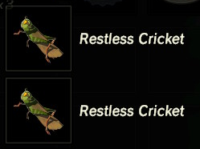
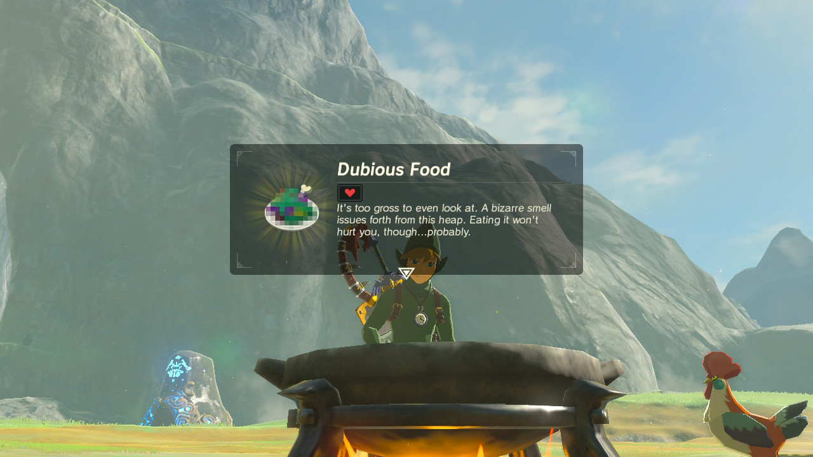

Dubious Food
Although hard to look at or even smell, this is a great source of energy.
Made from high quality ingredients found in the wild, and of course, love.
It might not look edible, but eating it won't hurt... probably.
Ingredients
- Your favorite fish. I used one I found at the shore.

- One bokoblin horn. I found this one by
bullying slaying a bokoblin I found while riding my bike.

- (Optional) Two crickets. These can be found by cutting grass. I found mine under a rock.

Find out how Link got his devious hands got these ingredients.
Recipe instructions:
- Grab the most fresh fish you can find and throw it in the cooking pot.
- Stir the pot with a bokoblin horn until the fish starts to boil and then add the horn to the pot. This will add the crispiness to the dish.
- Sprinkle two crickets on top of the pot. This is optional, but this will give our dish that home made aroma that'll make you forget about the taste.
- Wait until the food gets a censored look and texture and serve!

Home Page